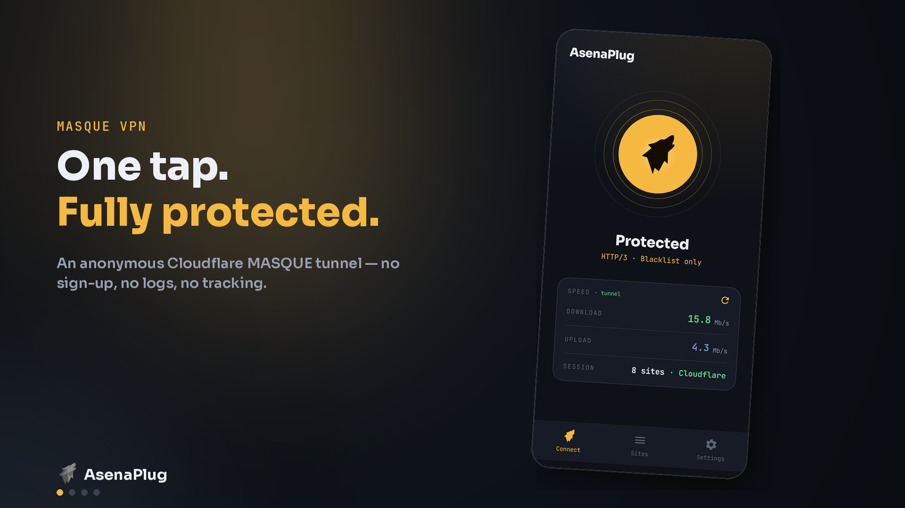
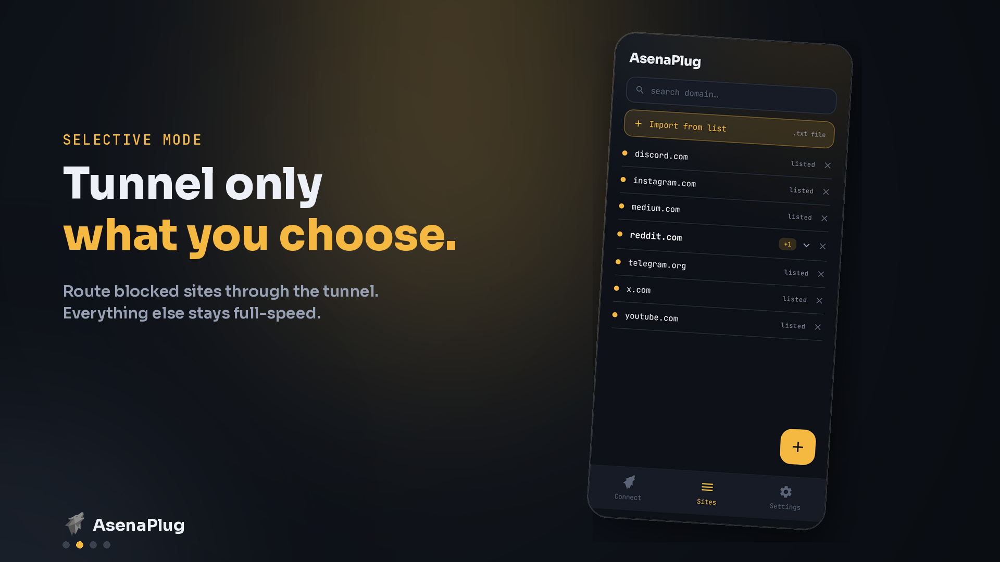
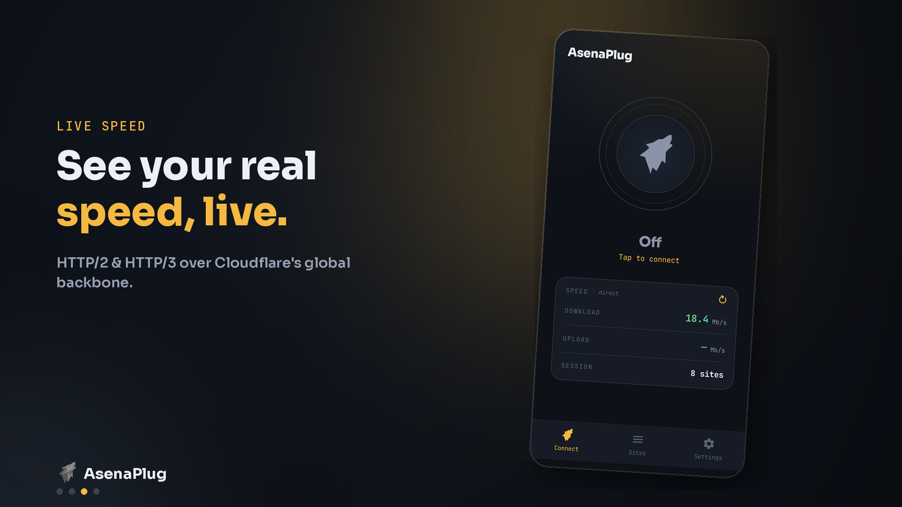
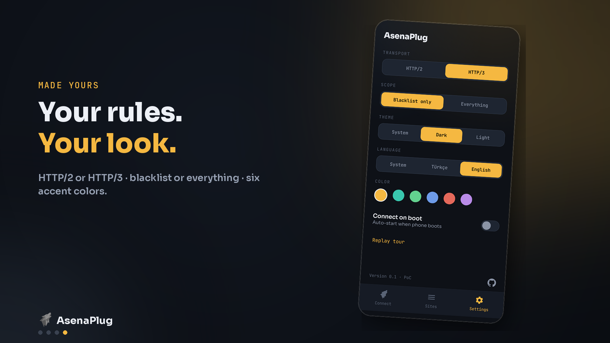

A censorship-resistant tunnel that disguises itself as ordinary HTTPS to slip past DPI & DNS blocking — where WireGuard gets throttled, this survives. One tap from the system tray, on every device you own.

AsenaPlug carries your traffic over Cloudflare's MASQUE (HTTP/2 or HTTP/3), so on the wire it looks like ordinary HTTPS and survives Turkish ISP DPI and throttling. It opens IP-blocked sites too and hides the traffic — a clean, un-poisoned DNS answer travels through the tunnel. Your physical internet stays the default: only the domains on your blacklist are tunneled, unless you flip to full-tunnel.
Pick HTTP/2 (default, DPI-resistant) or HTTP/3 (QUIC, lower latency); route only your blacklist or everything.
chosen from the trayAdd or edit tunneled domains and they apply instantly — a hot DNS reload with no reconnect, no dropped session.
changes apply liveEnglish, Deutsch, Español, Français, Türkçe — picks your OS language on first run, switchable any time.
EN · DE · ES · FR · TRA clickable tray indicator — green when connected, gray when off, live status while it switches. No dashboards.
PySide6, theme-freeParallel-stream download & upload tests, live, so you can see tunnel vs. direct throughput at a glance.
tunnel vs directWindows self-updates & starts on boot; Linux does per-app routing & Hyprland autostart; Android is native.
Win · Linux · Android

